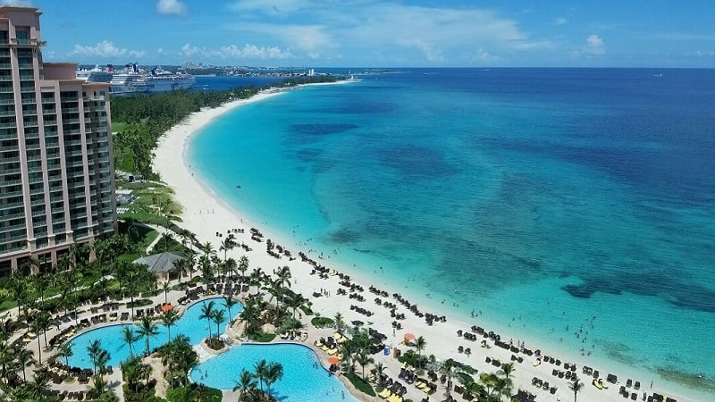

Bahamas, Bahamas
As paisagens das Bahamas são marcadas por relevo predominantemente plano, com elevações baixas e colinas no interior das ilhas, e recifes de corais e dunas junto à costa. São famosas pelas praias de areia branca, águas cristalinas e a exuberante vida marinha, incluindo peixes coloridos, tartarugas, tubarões e até porcos nadadores em algumas ilhas como Exumas. O arquipélago possui mais de 700 ilhas, com uma notável diversidade natural, desde a biodiversidade marinha a aves tropicais.
- Praias e Mar: As praias de areia branca e águas incrivelmente cristalinas são a marca registrada das Bahamas. A visibilidade subaquática é excepcional para mergulho.
- Vida Marinha: O arquipélago é um paraíso para a vida marinha, com recifes de corais coloridos, naufrágios, túneis, cavernas e os famosos porcos que nadam nas águas, como em Exumas.
- Relevo e Terrenos: O relevo é muito baixo, em sua maioria plano, com algumas colinas e dunas próximas à costa. O ponto mais alto é o Monte Alvernia, na Ilha do Gato (Cat Island), a 63 metros de altitude.
- Vegetação: Há uma rica biodiversidade, com presença de aves tropicais, como papagaios e flamingos, além de uma flora exuberante, segundo as descrições.
- Ilhas e Águas: As Bahamas são um arquipélago composto por mais de 700 ilhas e ilhotas, muitas delas habitadas, o que cria paisagens variadas e com muitas ilhas-destino.
- Mergulho e Snorkeling: As águas límpidas e os recifes de corais e formações rochosas são ideais para atividades de mergulho.
- Observação da Vida Selvagem: É possível observar diversas espécies marinhas, como golfinhos, tubarões e tartarugas, e aves tropicais.
- Exploração de Cavernas: O país oferece a experiência de explorar cavernas submarinas, túneis e buracos azuis.
- Exploração das Ilhas: As ilhas oferecem trilhas, praias tranquilas e paisagens naturais intocadas, ideais para atividades como kitesurfe e caminhadas.